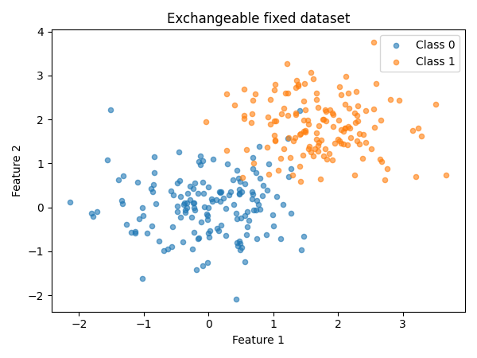
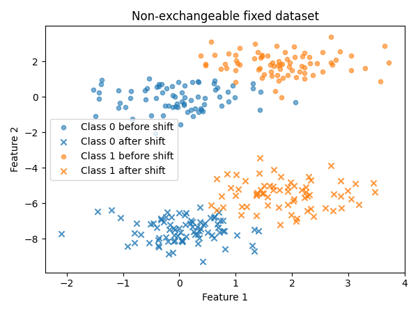

Note
Click here
to download the full example code
Exchangeability testing on a fixed dataset
This quickstart demonstrates how to test exchangeability on a fixed dataset.
Guarantees provided by conformal prediction and risk control depend on the
hypothesis that data is exchangeable. Verifying exchangeability before
applying methods from MAPIE is therefore important. Typically, (split)
conformal prediction, risk control, and calibration require data not seen
during training, such as a split of the test data.
Note that for the exchangeability test to be valid, the order of samples in
the fixed dataset must be representative of what will happen after deployment.
Shuffling the data beforehand would trivially render the dataset exchangeable
and hide any potential distribution shift.
Prepare the data
We first prepare the data and fit a classifier on the training data.
from sklearn.linear_model import LogisticRegression
from sklearn.model_selection import train_test_split
from mapie._example_utils import generate_gaussian_stream , plot_dataset
from mapie.classification import SplitConformalClassifier
from mapie.exchangeability_testing import FixedDatasetExchangeabilityTest
random_state = 42
X , y = generate_gaussian_stream (
shift_type = "stable" ,
random_state = random_state ,
)
X_train , X_test , y_train , y_test = train_test_split (
X , y , test_size = 0.3 , random_state = random_state , shuffle = False
)
plot_dataset (
X_test ,
y_test ,
title = "Exchangeable fixed dataset" ,
)
classifier = LogisticRegression ( random_state = random_state )
classifier . fit ( X_train , y_train )

LogisticRegression(random_state=42) In a Jupyter environment, please rerun this cell to show the HTML representation or trust the notebook.
Parameters
penalty
penalty: {'l1', 'l2', 'elasticnet', None}, default='l2'
'deprecated'
C
C: float, default=1.0
1.0
l1_ratio
l1_ratio: float, default=0.0
0.0
dual
dual: bool, default=False`) formulation. Dual formulation
False
tol
tol: float, default=1e-4
0.0001
fit_intercept
fit_intercept: bool, default=True
True
intercept_scaling
intercept_scaling: float, default=1
1
class_weight
class_weight: dict or 'balanced', default=None
None
random_state
random_state: int, RandomState instance, default=None` for details.
42
solver
solver: {'lbfgs', 'liblinear', 'newton-cg', 'newton-cholesky', 'sag', 'saga'}, default='lbfgs'` for more`
'lbfgs'
max_iter
max_iter: int, default=100
100
verbose
verbose: int, default=0
0
warm_start
warm_start: bool, default=False`.
False
n_jobs
n_jobs: int, default=None
None
Run the exchangeability test
Now we can test the exchangeability of the test dataset.
By default, we use all available test methods.
Method-specific parameters can be passed as a dictionary.
exchangeability_test = FixedDatasetExchangeabilityTest ()
exchangeability_test . run ( X_test , y_test )
print ( "Is the test dataset exchangeable?" )
for test_name , is_exchangeable in exchangeability_test . is_exchangeable . items ():
print ( f " { test_name } : { is_exchangeable } " )
Out:
the test dataset exchangeable?
True
True
True
True
True
True
Continue with MAPIE
The test dataset is exchangeable. We can continue with MAPIE.
Conformalization with a split of the test dataset will provide
coverage guarantees on the remaining test data.
X_conformalize , X_test_new , y_conformalize , y_test_new = train_test_split (
X_test , y_test , test_size = 0.5 , random_state = random_state
)
confidence_level = 0.95
mapie_classifier = SplitConformalClassifier (
estimator = classifier , confidence_level = confidence_level , prefit = True
)
mapie_classifier . conformalize ( X_conformalize , y_conformalize )
y_pred , y_pred_set = mapie_classifier . predict_set ( X_test_new )
Create a non-exchangeable dataset
Now let us see what happens for a non-exchangeable fixed dataset.
Here, an abrupt shift happens in the second part of the dataset.
X_test_abrupt , y_test_abrupt = generate_gaussian_stream (
n_samples = len ( X_test ),
shift_type = "abrupt" ,
prop_shift = 0.5 ,
random_state = random_state + 1 ,
)
shift_start_abrupt = int ( len ( y_test_abrupt ) * 0.5 )
plot_dataset (
X_test_abrupt ,
y_test_abrupt ,
title = "Non-exchangeable fixed dataset" ,
shift_start = shift_start_abrupt ,
)
exchangeability_test = FixedDatasetExchangeabilityTest ()
exchangeability_test . run ( X_test_abrupt , y_test_abrupt )
print ( "Is the shifted dataset exchangeable?" )
for test_name , is_exchangeable in exchangeability_test . is_exchangeable . items ():
print ( f " { test_name } : { is_exchangeable } " )

Out:
the shifted dataset exchangeable?
False
False
False
False
False
True
Interpret the result
The shifted test dataset is not exchangeable: MAPIE cannot provide
statistical guarantees on it, and more generally the classifier itself
should not be trusted without further investigation.
Note that the jumper martingale fails to detect the non-exchangeability in
this case. Itmostly reacts to one-sided p-value distortions
(many consistently small p-values, or many consistently large ones).
The shift creates both many very low and many very high p-values,
the effects cancel out for the jumper martingale.
More generally, this illustrates that no single test is perfect,
and that it is important to use multiple tests to get a complete picture.
Total running time of the script: ( 0 minutes 8.110 seconds)
Gallery generated by mkdocs-gallery